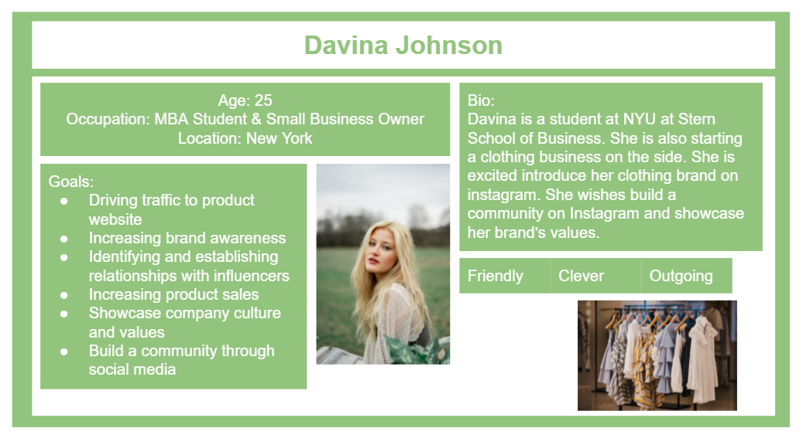
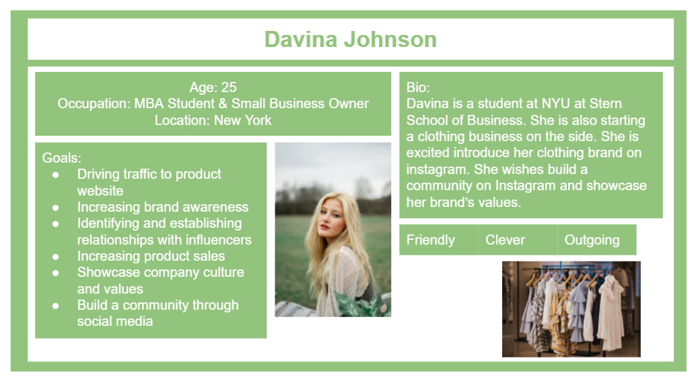

Chapter 8 Instagram
8.1 Personas
 


8.2 Demographics
✔️ Traget audiance (age, demogrraphics, political learnings, interests, hobbies) Instagrams target group is more so directed towards a younger demographic. It is demonstrated that 75% of users are between the ages of 18 and 24 years old.
✔️ Can non-users browse or search content? A nonuser of Instagram can search up the account and browse through the content. Furthermore, a none user can also search up hashtags to find specific types of posts.
✔️ How are users connected (e.g., on some platforms, you request a connection which needs to be accepted, but on others, you can follow anyone without them reciprocating) For Instagram, if a user wants to connect with another, they can request to follow them. This request then has to be approved if the user has a private account. In the case the user does not have a private account, the requester will automatically begin following them once requested. When direct messaging someone, if they are not your friend the user must accept the message. If users have already become friends they will typically just receive a notification they have received a message, and then they can proceed to view it.
✔️ Can content be shared privately? Sharing messages directly provides users with the feature of sending private messages. Moreover, one also has the ability to select individuals from their friends to view a private story. This allows for a smaller group to view your story instead of your entire following.
✔️ How is content shared? On Instagram, content is shared by making a post, this will show up on one’s profile. One could also post a story that can be added to your profile by making highlights at the top of your page. Content is also shared by direct messaging someone a post. The paper plane icon on every post allows one to forward it privately to whomever they wish. Additionally, one can also share a post on their story this way.
✔️ How does content go viral? Content on Instagram can go viral if one account is public and the post is sent to many other individuals, what can help a post go viral is if it includes hashtags. This way anyone searching up a specific topic can find your post if it is related. Once a post is viewed many times it has the possibility of being shared by accounts with a bigger following which then increases the number of times the content is viewed in turn making it go viral.
✔️ Is the parent company public or private? The parent company for Instagram is Facebook and it is a public company.
✔️ Who are the major investors? Kevin Systrom and Mike Krieger founded instagram in 2010. Hoowever, Steve Anderson was the first Major investor in this platfrom as he provided the first cheque of $250,000.
✔️ How does the company generate revenue? The company generates revenue by advertising. In 2019 Instagram gained $20 billion in revenue. It thrives off of the fact that it is geared around young adults and these young adults enjoy finding new products to try. Furthermore, Instagram can get a higher number of individuals clicking on ads. Businesses have taken over on Instagram. Brands use this social media platform to advertise to a bigger audience they do this by partnering with celeberties or well known individuals order to advartise to the largets followings of young adults.
8.3 Privacy and Surveillance
✔️ a link to your platform’s ToS and Privacy Policy
Terms of use: https://www.instagram.com/about/legal/terms/before-january-19-2013/
Privacy policy : https://help.instagram.com/519522125107875/?maybe_redirect_pol=0
✔️ your key takeaways from your examination of your platform’s ToS and Privacy Policy
Some things I was able to find out about Instagram regarding how they use your data and/or tracks your movements were..
~Information is collected specifically on the user of the platform. for eeexamplee, ones messages, the information you share, and communication with others.
~Location of a photo, and the date a file was created.
~What you see through features Instagram provides,ie, camera, filteers etc. is all tracked and seen by those who run the platform.
~Much of this information is to collect data and provide you with ads related to the content you observe.
8.4 Trust and Misinformation
Instagram works with third party fact checkers to identify, review and label false information. Additionally, instagram also has multiple community guidelines for user motivation to continue being an authentic and safe platform. Those guidelines include: - Users should only share content that they have right to share - Users may only post comments that are appropriate for a diverse audience - Users must follow Law and not spread misinformation in relation to sensitive topics such as: - Bullying - Alcohol - Tobacco products - Hate - Sexual services - Drugs - Users must respect all members of the instagram community
8.5 Public Discourse
High profile individuals usually use instagram for different reasons, it could be to interact with more people, or for promoting a brand through their pictures and videos, or could also be to share important information/content. Some benefits of being in the public eye and having a PLN are: - Individuals can interact with more people in an easier way - Make relationships with high profile individuals - Gain more knowledge for products/companies/brands interested in Some benefits of building a community with online tools by an employer is that the tools created could be safer than social media tools. This is because on social media tools everything is open source and all the information is public. Whereas a tool made by an employer can be more private and could follow security guidelines for employee safety.
We can ensure that a PLN is safe and reliable if users follow the guidelines set by the community.
Veteran story tellers could connect with third party fact checkers to identify misinformation. Or they could also use different sources to find information and cross check if the information matches.
8.6 Education
Instagram is a unique social media network, it is built almost entirely around sharing images and videos. You can get Instagram on smartphones, and Instagram has a desktop version as well. You can view your feed, like and comment on posts, and send and receive direct messages like other social media platforms. There is an easy way to ‘like’ someone’s post, by simply double tapping their content. Everyone can see the likes they got from their followers, unless you have the privacy setting turned as “private” or “visible to me only.” With the privacy setting, you can manage if you want your followers to see who liked your post or not. Generally, depending on the amount of followers an Instagram account has, the less the followers, the more likely you get responded by the creators if you comment on their posts. However, even for an Instagram official account that has more than 10 million followers, your comments can still get responded to, it’s rare, though.
Educators use Instagram as a more straightforward way to teach compared to other platforms. Educators use graphics, images, videos to support text in a clear and simple way to the learners and people who are interested with the topic. The content educators teach can vary quite a lot, from academic education to practical education, due to the openness and freedom people have on Instagram. It means that people can learn materials on Instagram that would help them succeed in university, as well as in life. The audience could be anyone who has an Instagram account, and usually people tend to follow Instagram accounts that match their areas of interests. Educators on Instagram typically are open to respond to questions, especially when good questions are asked. Some educators use Instagram as a PLN, which they also learn, share materials with other people whereas some educators only use Instagram for creating content.
For Instagram, it’s extremely important to gain as many followers as possible if you want your posts to get some views. In our learning pod, each of us created a new account for Instagram and we posted some short educational posts to see how people would react to it. However, this is not how Instagram works, none of us received a comment by someone. Therefore, Instagram is best used when you already have some reputation in your education career and suggest your learners to follow your Instagram account for more interesting content. So, people respond to the same post similarly if the creator of the post is reputed and authoritative.
Educators should always be aware of negative things such as offensive and inappropriate content on any social media platform. There are countless cases of people getting insulted, humiliated while using Instagram. Educators should focus on things they can have control of, and avoid creating posts that consist of racist messages, for instance. Instagram has a powerful feature that can help protect people when they experience a rush of abusive comments and DMs. The feature is called Limits, that is easy to turn on, and will automatically hide comments and DM requests from people who don’t follow you, or who only recently followed you.
As the Internet makes the educational process more interesting than ever, educators should keep themselves up to date with the cool features of social media platforms and get the most out of it. Instagram can become a great educational tool that makes the educational process unique, interesting, and insightful. For example, in teaching, instead of having a physical file of a portfolio, educators can encourage students to create a digital portfolio, or e-portfolio, on Instagram. A cool benefit for learners to use Instagram for learning is that Instagram helps build interpersonal skills. Interpersonal skills are a key element to ensure healthy personal and professional lives. With Instagram’s cool feature of sharing personal stories and interests with others, teachers can encourage students to engage with their peers in Instagram, and form groups on the platform. Instagram is a cool addition to class even for a traditional classroom.
8.7 Balancing your PLN and Public Discourse
Notable, high-profile individuals have a chain of social media accounts, including Instagram, Twitter, etc. For educators who have established a PLN in social media platforms, it’s much easier for them to browse the content they need and make positive interactions with other people. On Instagram, if there’s a blue check mark in the profile page of an account, that means their posts are from a reputed, authoritative official account. Therefore, when building a PLN on Instagram, following those official accounts will give you more reliable information.
8.8 Reflection
8.8.1 Digital Identity
Personally, I present my personal identity and school identity on Instagram as it is more casual in comparison to my work identity which is presented on LinkedIn. The reason for this is to keep my professional and work-related material and aspects of my life such as my accomplishments and my qualifications to remain aligned with future goals and opportunities. I do keep my personal and school accounts generally formal as well. However, I am more relaxed about posting everyday experiences or the more social and adventurous aspects of my life on my personal platforms. I do believe using a social platfroms is very beneficial for professional use. In the reading by Rajagopal, et al. 2012, for my first Wow and Wonder post I was facinated to understand how big of a role the three-layered approach proposed by Grabher and Ibert (2008) placed on networking in a professional setting. The importance of the communality layer/strong ties, sociality layer/weak ties, and connectivity layer/very weak ties when building these connections in a workplace can lead to a more mentor based relationships with leaders in those companies. These relationships can then aid in individuals avoiding making mistakes when making bigger career based decisions down the road. Thus, I belive it is important to keep personal and professional identities sperated.
8.8.2 Access and Inclusion
Inclusive design aims to provide the user with a good experience. It is known as shifting away from the idea of “one-size-fits-all.” And moving towards creating a design for a diverse range of users. Accessibility on social media platforms is in relation to recognizing exclusion and displaying information in a clear manner. Instagram provides the following to increase inclusion and accessibility: - Automatic captioning - Alt-image descriptions - Include descriptive captions - Screen reading - Adjust text size - Manage video captions Following are the ways in which people can produce content to meet accessibility needs: - Writing in plain language - Adding hashtags and mentions - Limit emoji use - Avoid special characters - Descriptive image captions - Use good color contrast: Avoid color contrasts that are difficult to read
Personally, I think that information should be easily accessible and understandable for everyone in our society. Visual, speech, physical, all sorts of measures should be taken into consideration when implementing accessibility tools. Social media is a really powerful tool which allows our communities to share information easily, therefore, it is critical for social media platforms to have necessary accessibility measures.
8.8.3 Media Literacy, Trust, and Disinformation
A content moderation policy is created by operators that prohibit users from posting certain content, such as content that exhibit graphic violence, child sexual exploitation, and hateful content. In Instagram, content moderation policy is used to protect members of the Instagram community. Instagram will remove content that contains hate speech, repeated unwanted messages, etc. Instagram doesn’t flag disinformation itself, however, users are encouraged to report disinformation they saw and the content will be removed after the inspection by Instagram. Media literacy provides a framework to access, analyze, evaluate, and create messages in a variety of forms – from text to video. It’s important to note that media literacy is not just about “protecting” us from unwanted messages. Media literacy is more about helping us become competent, critical, and literate in all media forms so that we control the interpretation of what we see or hear rather than letting the interpretation control us. It’s important for us to be aware of the information on the social media platforms, some of them could be fake. For me personally, I use critical thinking (a strategy that is more often used in writing an assignment) for browsing information on Instagram as well. I perceive everything on Instagram as 50% real and 50% fake, and only to believe it’s 100% real if I can verify the information. So I never get troubled by misinformation on Instagram and other social media platforms.
8.9 Resources
Sehl,K. (2022). Inclusive Design for Social Media: Tips for Creating Accessible Channels. (2020). Retrieved 27 March 2022, from https://blog.hootsuite.com/inclusive-design-social-media/
Accessibility | Instagram Help Centre. (2022). Retrieved 27 March 2022, from https://help.instagram.com/308605337351503
Combatting Misinformation on Instagram | Instagram. (2022). Retrieved 27 March 2022, from https://about.instagram.com/blog/announcements/combatting-misinformation-on-instagram
Community Guidelines | Instagram Help Centre. (2022). Retrieved 27 March 2022, from https://help.instagram.com/477434105621119
CEAMBUR, A. 2022. Neals Schaffer.“How to Identify Your Instagram Target Audience and Turn Them into Customers.” https://nealschaffer.com/instagram-target-audience/#:~:text=The%20Instagram%20demographic%20shows%20that,25%20and%2029%20years%20oldhttps://www.investopedia.com/articles/personal-finance/030915/how-instagram-makes-money.asp
Instagram. 2013. “Terms of Use” https://www.instagram.com/about/legal/terms/before-january-19-2013/
Instagram. 2022. “Data Policy.” https://help.instagram.com/519522125107875/?maybe_redirect_pol=0
Erarslan, A. 2019.“Instagram as an Education Platform for EFL Learners.” https://files.eric.ed.gov/fulltext/EJ1223776.pdf
Mosseri, A. 2021. Instagram. https://about.instagram.com/blog/announcements/introducing-new-ways-to-protect-our-community-from-abuse
Mac, R. 2013. Forbes “How Instagram’s First Investor Steve Anderson Struck Gold As A One-Man Deal” Machinehttps://www.forbes.com/sites/ryanmac/2016/03/23/steve-anderson-baseline-ventures-instagram-venture-capital-raver/?sh=4e45a62a354d
Cruncbase. 2022. “instagram” https://www.crunchbase.com/organization/instagram
Rajagopal, et al. 2012. “Understanding personal learning networks: Their structure, content and the networking skills needed to optimally use them”https://firstmonday.org/ojs/index.php/fm/article/view/3559/3131